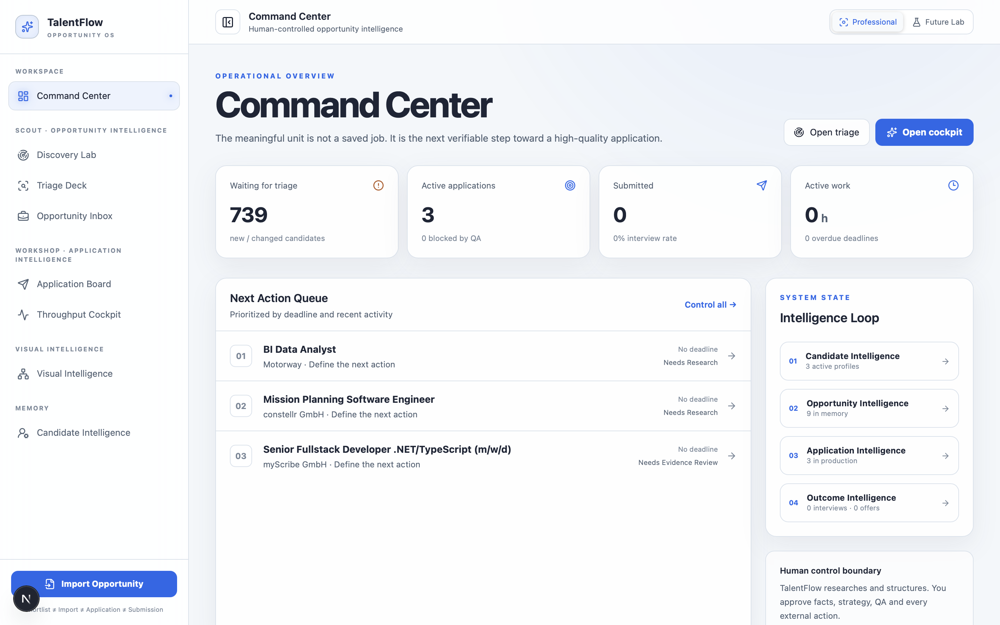

01FEATURED · PRIVATE
TalentFlow
Problem. Job searching quickly becomes a fragmented mix of listings, notes, application stages and subjective decisions.
Built. A workflow-oriented full-stack application that brings opportunity evaluation, application tracking, triage and decision support into one coherent product.
Engineering. Next.js and TypeScript application architecture, persistent data workflows, reusable UI patterns and visualization-driven product UX.
Private project